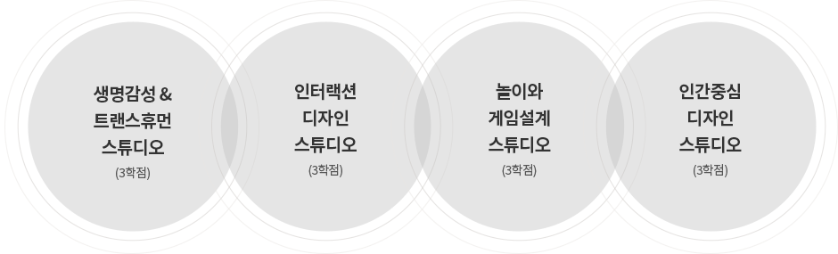

@@include('sub_visual.html',{
"title" : "학부",
"type" : "type3",
"sub_menu" : "교육"
})
@@include('../inc/tab.html',{
"has_tab" : true,
"tab_list" : ["개요","교과 이수 총괄표","창의교육 프로그램","단기유학 프로그램","학생지원제도"],
"type" : "type5"
})
PGS(Personal Growth Statement) 설계
-
1학년 1학기 전공 교과목
- 학생들에게 자신의 꿈이 무엇인가를 생각해 보게 하고 특히, 학부 과정 동안 이루고 싶은 꿈과 하고 싶은 분야를 찾도록 도와주는 교육과정
- 자기주도 성장계획(Personal Growth Statement)을 만들고 실행하는데 가이드가 될 수 있는 다양한 배경지식과 역량을 배양
| 2학년 1학기 |
2학년 2학기 |
3학년 1학기 |
3학년 2학기 |
창의IT설계 I : 기초이론 및 설계
(3학점)
|
창의IT설계 II : 기초설계
(3학점)
|
창의IT설계 III : 고급설계
(6학점)
|
창의IT설계 IV : 시스템통합
(6학점)
|
창의 설계(Creative IT Design)
-
2~3학년 전공 교과목
- PGS에서 설정한 꿈을 이공계 분야에서 구현할 수 있도록 지도하는 교육
- 팀 티칭 및 개인 / 그룹별 연구와 실습을 통하여 IT융합기술을 단계적으로 배우고 적용함으로써 창의적인 Prototype을 구현하는 새로운 과정
창의 스튜디오(Creative Studio)
-
2~3학년 전공 교과목
- PGS에서 설정한 꿈을 인문 기술 융합 분야에서 구현할 수 있도록 지도하는 교육과정
- 공학, 인문, 예술, 디자인 등 탈 경계적 학제 교육을 목표로 자유롭고 창조적인 상상력 설게 및 디자인 교육을 실시하며, 과제실습을 중심으로 프로젝트 형태로
운영
